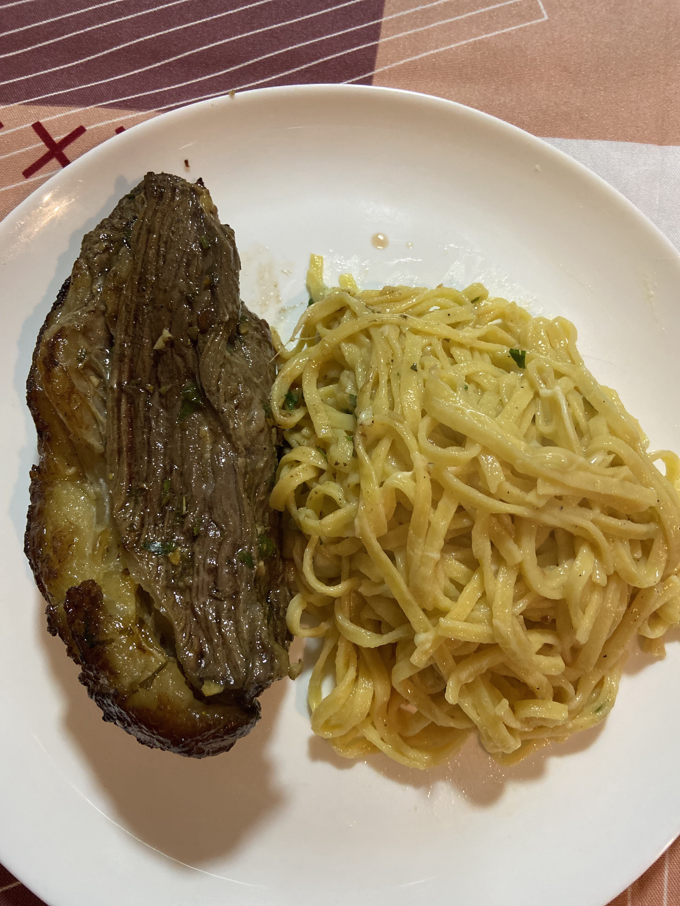

Desfrute de uma deliciosa combinação de fraldinha suculenta acompanhada de um cremoso macarrão talharim, perfeita para um almoço ou jantar especial.
Ingredientes:
Para a Fraldinha:
1kg de fraldinha
4 dentes de alho picados
Sal e pimenta-do-reino a gosto
2 colheres de sopa de azeite
1 ramo de alecrim
1 ramo de tomilho
1/2 xícara de vinho tinto
Para o Macarrão Talharim:
500g de macarrão talharim
2 colheres de sopa de manteiga
1 dente de alho picado
200ml de creme de leite fresco
1/2 xícara de queijo parmesão ralado
Sal e pimenta-do-reino a gosto
Salsinha picada para decorar

Modo de Preparo:
Preparação da Fraldinha:
Tempere a fraldinha com sal, pimenta-do-reino, alho picado, alecrim e tomilho. Regue com azeite e deixe marinar por pelo menos 30 minutos.
Aqueça uma frigideira grande ou panela de ferro em fogo alto. Sele a fraldinha dos dois lados até ficar dourada.
Adicione o vinho tinto à frigideira e deixe cozinhar por mais alguns minutos, até o álcool evaporar e formar um molho.
Reduza o fogo, tampe a panela e cozinhe a fraldinha em fogo baixo por cerca de 20-25 minutos, ou até atingir o ponto desejado. Retire a fraldinha, deixe descansar por alguns minutos e depois corte em fatias finas.
Preparação do Macarrão Talharim:
Cozinhe o macarrão talharim em água salgada conforme as instruções da embalagem, até ficar al dente. Escorra e reserve.
Em uma panela grande, derreta a manteiga em fogo médio e adicione o alho picado. Refogue até dourar.
Adicione o creme de leite fresco e misture bem. Cozinhe por alguns minutos até começar a engrossar.
Adicione o queijo parmesão ralado e misture até derreter e incorporar ao molho. Tempere com sal e pimenta-do-reino a gosto.
Adicione o macarrão talharim cozido ao molho e misture bem para que o molho envolva todo o macarrão.
Montagem:
Sirva a fraldinha fatiada ao lado do macarrão talharim com molho.
Decore com salsinha picada e, se desejar, mais um pouco de queijo parmesão ralado por cima.
Acompanhe com uma salada verde fresca e aproveite!
Dicas:
Para um toque especial, você pode adicionar cogumelos frescos ao molho do macarrão.
Deixe a fraldinha descansar após o cozimento para que os sucos se redistribuam, garantindo uma carne mais suculenta.